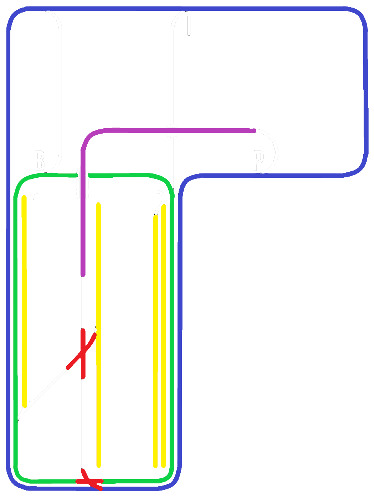

Bienvenue sur la page d'accueil de mon réseau de train miniature.
Ce site a été créé par 𝔏𝔢 ℭ𝔞𝔳𝔞𝔩𝔦𝔢𝔯 ℜ𝔦𝔞𝔫𝔱.
Vous trouverez ici une présentation et une description du matériel roulant du réseau, des rails et des maquettes présentes.
Il y a actuellement 12 locomotives, 57 voitures et 39 wagons, 14 maquettes ainsi que 246 rails.
Voilà un plan simplifié de mon circuit : il y a deux boucles indépendantes, en bleu et en vert ; un passage supérieur, en violet ; deux croisements, en rouge ; enfin, quatre voies de garage, en jaune.
Les aiguillages B, I et P sont électrifiés et permettent respectivement de changer de Boucle, d'accéder à l'Intérieur, ou d'accéder au Pont.

